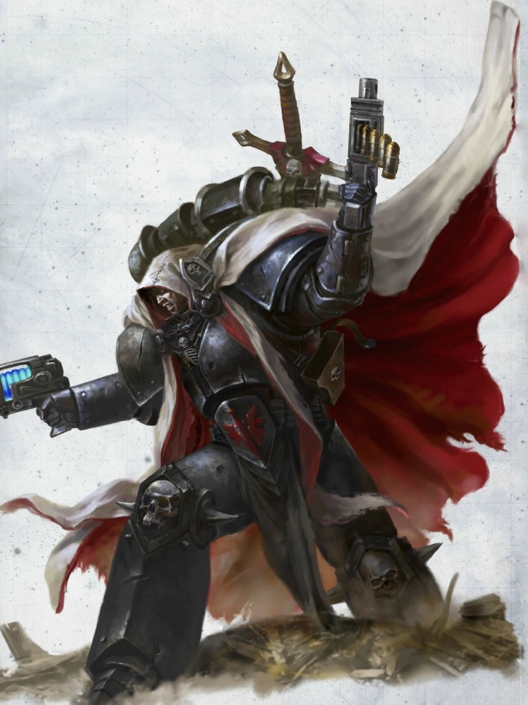

Cypher
| Cypher | |
|---|---|
| Lord of the Fallen | |
 Cypher in the Era Indomitus, from an Inner Circle pursuit file | |
| Lord of the Fallen | |
| Tenure | First sighted M31; active to the present (M42) |
| Born | Unknown; believed a warrior of the I Legion of the Great Crusade (M30–M31) |
| Status | At large; escaped the Imperial Palace (999.M41) |
| Allegiance | Disputed; renegade to the Imperium, enemy of the Dark Angels, but has aided Roboute Guilliman |
| Legion | Dark Angels (formerly) |
| Wargear | Ancient plasma pistol and bolt pistol; a sword he never draws, rumoured to be the Lion Sword; a C'tan phase knife (from 624.M36) |
| Known for | Freeing Guilliman in the Maelstrom during the Terran Crusade (999.M41); the Massacre at Darkmor (M42) |
Cypher, called the Lord of the Fallen, is the most notorious of the Fallen, the warriors of the I Legion who turned against Lion El'Jonson on Caliban at the end of the Horus Heresy and were scattered through time and space by the Warp storm that destroyed that world. For ten thousand years he has appeared across the galaxy, always ahead of the Dark Angels and their successor Chapters, the Unforgiven, who hunt him above all others. His true name and purpose are unknown.[1][2]
In 999.M41 Cypher freed the resurrected Roboute Guilliman from captivity in the Maelstrom in return for a promise that he would be brought before the Emperor. He fought beside the primarch all the way to Terra, was imprisoned in the Imperial Palace on Guilliman's order, and escaped within hours. In the Era Indomitus he is pursued by the Dark Angels, now led again by their returned primarch, and by a force of the Adeptus Custodes and the Sisters of Silence.[3]
Identity
[edit]Cypher is said to have been a warrior of the Legion's oldest ranks, perhaps one of the Terran-born veterans of the First Founding. Accounts of the Heresy era record that within the I Legion "Cypher" was a title, held by the keeper of the Legion's rites and lore, rather than a name; Imperial scholars dispute whether the renegade of later ages is one of its holders, a successor to the title, or a series of different men. The Dark Angels' own records list his kills as including planetary governors, Chaos Space Marine warlords, Chapter Masters, sorcerous covens, cult leaders and high-ranking Inquisitors, but also report that he has intervened in battles to save Imperial forces.[1]
Sightings
[edit]The Dark Angels probably first met him in the last years of M31, during their search for new recruiting worlds. Between 580.M31 and 632.M32, in the Forgotten Wars, the Dark Angels and the Angels of Vengeance, Angels of Redemption and Lions Sable pursued the Fallen, and the Lions Sable were lost on Cocytus in a trap that some attribute to him. In 822.M33, at the Battle of Vermilac Prime, Cypher's intervention stopped Orks from looting the Lion Helm and the Sword of Secrets from the body of Supreme Grand Master Alloken. He was seen during the Nova Terra Interregnum in 257.M35, and in 624.M36 he was first seen carrying a C'tan phase knife.[1]
In 665.M38 he impersonated the cowled Inquisitor Arnuldus on a secret mission. The Dark Angels lost track of him between 200 and 500.M39, a period in which he is believed to have been within the Eye of Terror. Further sightings are recorded throughout M40 and M41, often at moments when the Unforgiven could not seize him.[1]

The Terran Crusade
[edit]During Guilliman's Terran Crusade in 999.M41, the primarch's fleet was defeated in the Maelstrom by the Greater Daemon Kairos Fateweaver, and he and his surviving forces were imprisoned in a Blackstone Fortress that Abaddon the Despoiler had given to the Red Corsairs. Cypher came to the fortress with the Harlequin Shadowseer Sylandri Veilwalker and offered to free Guilliman if the primarch would let him stand before the Emperor on Terra. Guilliman agreed. Cypher fought at his side through the escape from the fortress, through the Webway and on Luna, where they faced Magnus the Red. When the crusade reached the Imperial Palace, Guilliman had him taken into custody, unwilling to trust him until he understood his aims; within hours Cypher had escaped.[3]
Era Indomitus
[edit]Soon after his escape the Dark Angels picked up his trail again. The pursuit led to the Massacre at Darkmor, in which companies from half a dozen Unforgiven Chapters, among them the Angels of Vengeance, the Consecrators and the Guardians of the Covenant, followed their Librarians' scrying to the shrine world of Darkmor, found it ruined and its people slain, and were ambushed by daemons, Chaos Space Marines and renegades as the Warp storms closed again. Fewer than a hundred of a thousand Space Marines escaped, and they did so only by following Cypher to a hidden teleportation device. It was the Unforgiven's worst single loss since the Forgotten Wars.[1][a]
His jailers on Terra are also in pursuit. Shield-Captain Daryth of the Adeptus Custodes, with his Shield Company and a cadre of Sisters of Silence, followed his trail across the Great Rift into the Imperium Nihilus aboard the frigate Sol's Arrow, unaware that an unmarked black strike cruiser was following them. The return of Lion El'Jonson in the 42nd millennium has given the hunt a new urgency, since the Lion is the one being in the galaxy who could answer the question of what happened on Caliban; whether Cypher seeks him or flees him is not recorded.[3]
Wargear
[edit]Cypher fights with two ancient pistols, a plasma pistol and a bolt pistol, and carries a sword on his back that he is never seen to draw. Some among the Unforgiven believe it is the Lion Sword, lost when the primarch vanished; the Inner Circle whispers that it may instead be the black Sword of Luther, said to have struck the Lion down. From 624.M36 he has also carried a C'tan phase knife.[1]
Timeline
[edit]| Date | Event |
|---|---|
| Late M31 | First encounters with the Dark Angels |
| 580.M31–632.M32 | Forgotten Wars; loss of the Lions Sable |
| 822.M33 | Battle of Vermilac Prime |
| 257.M35 | Sighted during the Nova Terra Interregnum |
| 624.M36 | First seen with a C'tan phase knife |
| 665.M38 | Impersonates Inquisitor Arnuldus |
| 200–500.M39 | Within the Eye of Terror |
| 999.M41 | Frees Guilliman in the Maelstrom; captured and escapes on Terra |
| Early M42 (estimated) | Massacre at Darkmor; pursuit by Shield-Captain Daryth |
See also
[edit]Notes
[edit]- ^ The Massacre at Darkmor is dated only to the opening years of M42.